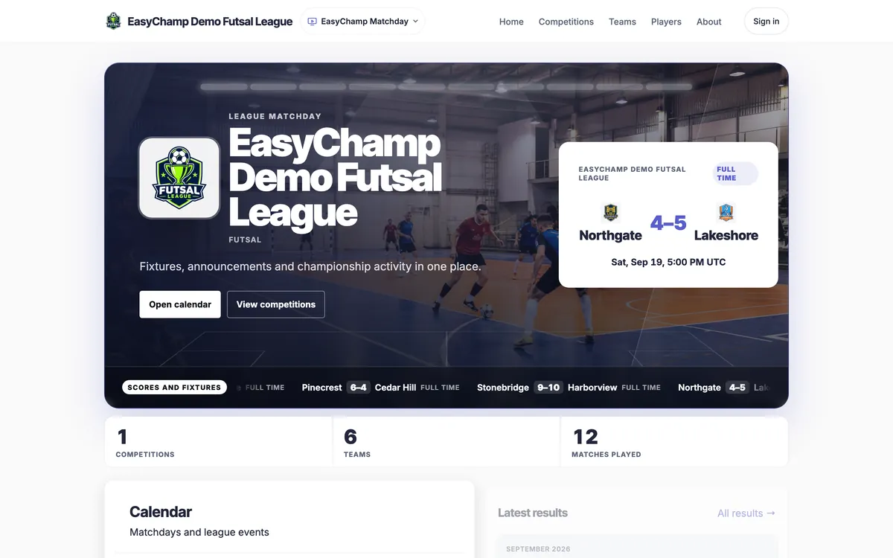
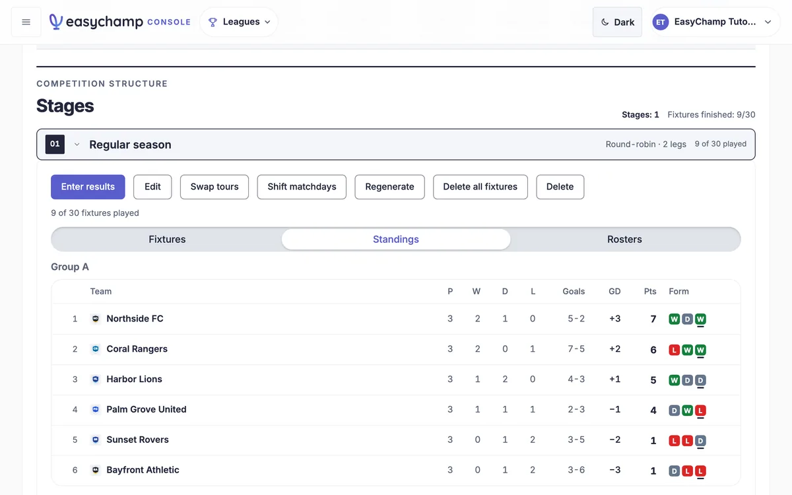

Checking service status
Waiting for current monitoring evidence.


Monitoring signals
Measured independentlyActive incidents
Services
90-day observed historyLoading service checks…
Incident history
Recent updatesIncident history is loading.
What does Operational mean?
Operational means the configured, current checks passed. Open a service to see its exact coverage; every feature is not checked.
Needs attention: a configured check, data destination, or scheduled job has an issue. Open a monitoring signal to see its exact scope. Partial outage: a required content or schema check failed. Major outage: a configured endpoint failed its availability check.
Maintenance: a feed is reported inactive. Unknown: evidence is missing, expired, invalid, or a check cannot complete. Group coverage counts complete current checks, including checks that found issues.
Job Operational verifies scheduled execution. Destination data requires separate import and destination receipts. Kubernetes uses existing Prometheus for node readiness, sustained alerts and CPU, memory and disk coverage.
HTTP checks are scheduled about every 5 minutes; rendering every 15 and cluster collection every 10. GitHub schedules are best effort. HTTP and publication expire after 15 minutes, rendering after 35 and collector evidence after 20. Running and paused jobs stay explicit.
Daily bars show the worst observed status in each UTC day. Missing evidence stays Unknown. Sampled observations are not continuous uptime or an availability SLA.